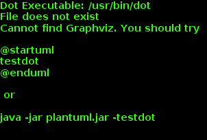

Der perfekte Blog für Entwickler¶
Ich habe in den letzten Jahren ein paar Blog-Systeme getestet und da mir die Systeme keine Spaß gemacht haben bzw. zahlreiche Funktionen zu kompliziert implementiert waren oder einfachste Sachen gar fehlten, habe ich das Bloggen oft schnell eingestellt.
Damit soll jetzt Schluss sein und ich habe versucht ein Blog-System aufzusetzen, das viel Arbeit abnimmt und das sich von der eigentlichen Tätigkeit eines SW-Entwicklers, dem Code schreiben, nicht zu sehr unterscheidet.
Wilkommen bei meinem Tutorial über die geilste Blog-Environment für die faulsten und damit besten Entwickler der Welt.
Wir werden folgendes zusammenenbauen (Details in den jeweiligen Kapiteln):
- github pages / github.io: Als Speicherplatz und Server für unseren Blog
- Sphinx mit Restructured Text: Als einfaches System zum Schreiben von Texten/Dokumenten
- ABlog: Eine Sphinx-Erweiterung, um aus Sphinx einen Blog zu machen
- Disqus: Als Kommentar-Möglichkeit für den Blog
- PlantUML: Für die Erstellung von Diagrammen
- TravisCI: Zum automatisieren Bauen des Blog, sobald Änderungen vorgenommen wurden
github: Speicherplatz und Blog-Auslieferung¶
github ist perfekt zum Speichern von Code und dank github pages ist auch perfekt zum Ausliefern von statischen HTML Inhalten, was unser Blog zum Glück ist.
Von github pages kann man seine projekt/repositiory-spezifischen Seiten hosten lassen oder aber auch genau eine Seite für seinen Account oder dem seiner Firma. Ich gehe hier davon aus, dass wir eine accountspezifische Seite erstellen wollen. Daher muss man im github folgendes Repository anlegen: ACCOUNTNAME.github.io
Bemerkung
Bei eine Seite für ein Projekt darf es kein extra Repository sein. Sondern im Projekt-Repo muss ein Branch gh_pages angelegt werden, in dem die folgende Schritte dann angewendet werden müssen.
github erwartet, dass im Branch master auf der obersten Ebene eine index.html Datei vorhanden ist, diese wird dann bei Aufruf von http://ACCOUNTNAME.github.io ausgeliefert.
Auf der github-Seite lassen wir für unser Repository auch gleich ein neuen Branch anlegen: sources Dieser Branch enthält später die orginalen Blog-Dateien (Posts, Config, Themes, ...), während der Branch master nur die generierten HTML-Seiten (der fertige Blog) enthalten soll.
Wir öffnen nun eine Konsole/Bash/Windows-Terminal und führen folgendes aus:
cd WORKSPACE
git clone http://github.com/ACCOUNTNAME/ACCOUNTNAME.github.io -b sources
cd ACCOUNTNAME.github.io
mkdir _website
cd _website
git clone http://gothub.com/ACCOUNTNAME/ACCOUNTNAME.github.io -b sources master
Die Erklärung im Detail
- Zeile 1: Hier in ein Verzeichnis wechseln, dass man eventuell für all seine Projekte verwendet
- Zeile 2: Wir klonen das Projekt, aber direkt den Branch sources
- Zeile 3: In das (noch leere) Projekte-Verzeichnis wechseln. Dies wird spätere unsere Blog-Daten enthalten
- Zeile 4: Das Verzeichnis _website wird später von ablog angelegt, um dort den generierten Blog zu speichern. Wir kommen dem zuvor.
- Zeile 5: Wir clonen den master Branch, damit wir nach der Blog-Generierung hier später unseren Blog einfach commiten können.
Bemerkung
Ich weiß, wir haben jetzt ein git-Repository innerhalb eines git-Repositories geklont. Ganz böser Stil. Eleganter wäre die Verwendung von git submodules.
Wir wechseln wieder zu zum Verzeichnis für den sources Branch WORKSPACE/ACCOUNTNAME.github.io und legen dort die Datei .gitignore mit folgendem Inhalt an:
# ABLOG stuff
_website/
useblocks.github.io/
.doctrees
.doctrees/
Dies sorgt dafür, dass in dem sources Branch die generierte Webseite nicht mitgespeichert wird.
Sphinx and ABlog¶
Erstmal Sphinx und ABlog installieren.
Für Linux auf Systemebenen:
sudo apt-get install python-sphinx
# Danach
pip install -U ablog
# Falls Python3 geünwscht ist, python3-sphinx und pip3 verwenden
Falls Phthon schon installiert ist oder eine Virtual Environment verwendet werden soll:
pip install sphinx
pip install -U ablog
Danach können wir unseren Blog anlegen lassen:
cd WORKSPACE/ACCOUNTNAME.github.io
ablog start
Nun werden ein paar Daten abgefragt, ein ENTER übernimmt die empfohlenen Vorauswahl in den []-Klammern. All diese Optionen können auch noch nachträglich ohne Probleme geändert werden.
Wenn das abgeschlossen ist, kann man seinen Blog bauen und lokal ausliefern lassen:
ablog build # Baut den Blog im Verzeichnis _webseite
ablog serve # Startet einen kleinen Server und öffnet den Browser mit dem Blog
Man kann den eingebauten ABlog-Server so konfigurieren, dass er bei Änderungen an den Blog-Quell-Dateien den Blog direkt neu baut und wieder ausliefert. Dafür muss noch watchdog installiert werden:
pip install watchdog
Jetzt reicht ein ablog -r, um immer den aktuellen Stand im Browser zu sehen.
Conf.py¶
Wir müssen nun ein paar Änderungen an der sphinx-Konfigurationsdatei vornehmen, die mit in eurem Blog-Verzeichniss angelegt wurde. Öffnet die conf.py und ändert folgende Parameter (Evtl. müssen 1-2 Sachen auch ganz neu gesetzt werden.):
blog_baseurl = "http://ACCOUNTNAME.github.io"
github_pages = "ACCOUNTNAME" # ohne github.io
post_date_format = '%d.%m.%Y' # Falls das deutsche Datumsformat verwendet werden soll
today_fmt = ' %d.%m.%Y' # Siehe oben :)
Weitere Einstellungen
Sphinx, ABlog und auch das standardmäßig verwendete Theme Alabaster besitzen eine Menge Konfigurationsparameter, die interessant und nützlich sein können. Schaut dazu am besten in deren Doku rein.
Falls ihr die conf.py dieses Blogs anschauen wollt, diese findet ihr hier: https://github.com/useblocks/useblocks.github.io/blob/sources/conf.py
ABlog verwenden¶
Ok, das Thema würde diesen Post bei weitem sprengen. Schaut dazu bitte bei ABlog vorbei.
Disqus¶
Disqus ist eine Kommentar-Plattform, die sich in Webseiten einbinden lässt.
Die Kommentare erscheinen unterhalb des jeweiligen Blog-Eintrages und Besucher eures Blogs können dort Kommentar direkt hinterlassen.
Disqus selbst bietet eine Reihe von Funktionen, damit ihr die Kommentar sinnvollen moderieren könnt: Bestätigung für Veröffentlichung, Wort-Filter, Spam-Checks, ....

Damit ihr Disqus intergrieren könnt, müsst ihr einen Account haben und eure Website registrieren.
Warnung
Damit ist nicht die Registrierung eines Channels gemeint! Das ist was anderes, kann z.Z. nicht gelöscht werden und führt nur zu Verwirrungen. Also folgenden Screenshot ansehen :)

Disqus vergibt einen shortname für eure Webseite. Den braucht ihr, um ihn in die conf.py einzutragen:
disqus_shortname = "useblocksblog"
Das war’s auch schon mit Disqus und euer Blog sollte nun Kommentare unterstützen.
First Deploy¶
Um überprüfen zu können, ob wirklich alles richtig funktioniert (gerade Disqus mag lokal nicht gehen), laden wir nun den Blog auf github hoch:
cd WORKSPACE/ACCOUNTNAME.github.io
ablog build # Blog bauen
# Sources sichern
git add -A
git commit -m "Changed config to use disqus and other features"
git push origin sources
# Webseite/Blog veröffentlichen
cd _website
git add -A
git commit -m "Changed config to use disqus and other features"
git push origin master
Das war’s. Unter http://ACCOUNTNAME.github.io soltle der Blog nun online sein.
Der letzte Schritt kann auch ABlog übernehmen, wenn in der conf.py github_pages richtig gesetzt ist. Dann reicht auch folgendes aus:
ablog deploy
Was genau passiert, kann man hier nachlesen: http://ablog.readthedocs.org/manual/deploy-to-github-pages/#deploy-to-github-pages
Diagramme mit PlantUML¶
Falls man im Blog öfters Klassen-Diagramme oder Ablaufpläne veröffentlichen möchte, dann bitte diese Eitnrag lesen...
Mit PlantUML wird aus folgendem im Blog-Text:
@startuml
object hans
object peter
object emma
hans --> peter
peter --> emma
emma ..> peter
emma ..> hans
@enduml
schnell und einfach ein Bild:
